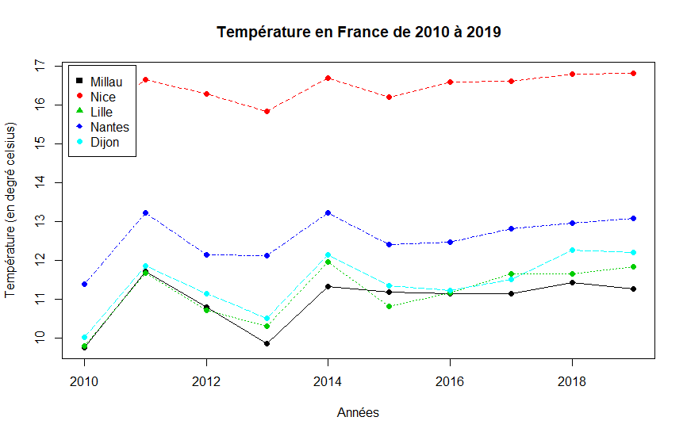
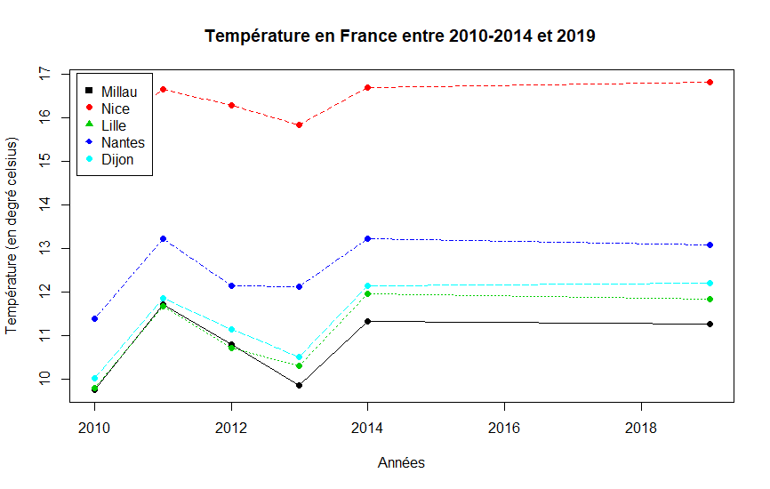
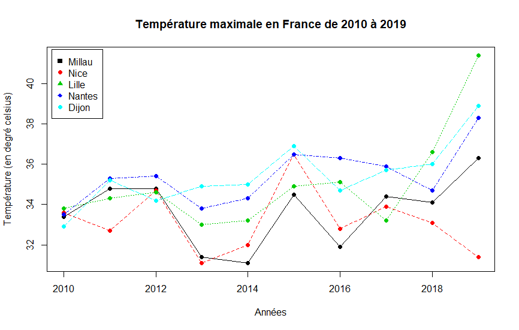
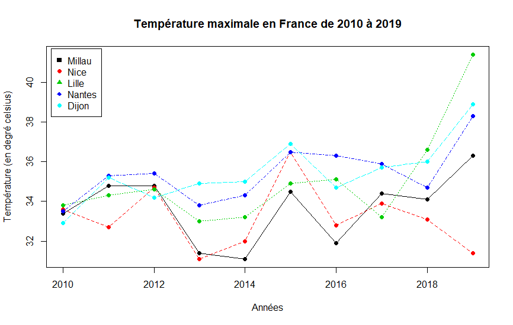
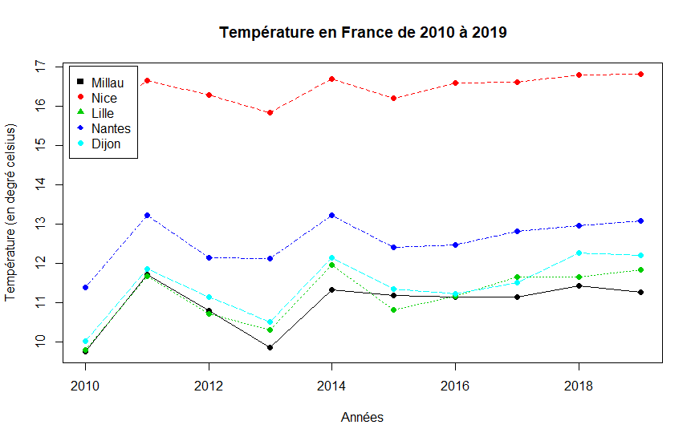
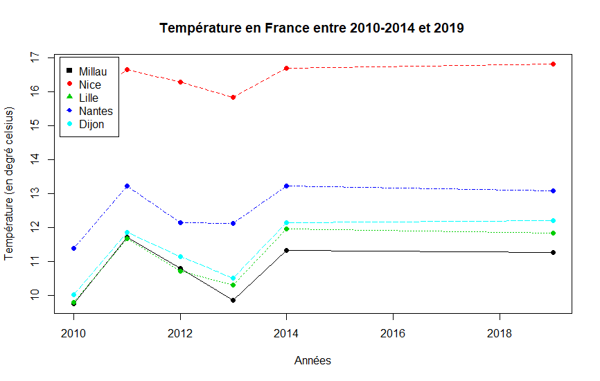

4 Résultats obtenus
  


1. Descriptif du sujet
Évolution de la température en France (3.2.2)
On voudrait étudier l'évolution de la température atmosphérique sur le territoire français.
Le problème est que les données historiques de Météo France sont payantes (200000 €/an).
On se contentera donc d’utiliser les quelques données publiques qu’on trouve ici pour arriver à nos fins.
On a donc choisi 5 villes et on a considéré les variables statistiques suivantes :
1) Découpez les données en deux parties : avant 2019 et courant 2019.
Utilisez les données de 2019 pour vérifier s’il y a eu un changement significatif des valeurs de température par rapport au passé.
2) Répétez les tests précédents en découpant les données autrement : avant 2015 et courant 2019.
Que remarquez vous?
3) Essayez de comprendre à présent si le réchauffement (ou pas) est présent aussi bien en zone rurale que
dans les grands villes.
Pour avoir le classement des villes en zones rurales on utilisera les données sur les
Zones de Revitalisation Rurale.
2. Description des données utilisées
Le jeu de données utilisé est au format CSV et encodé en UTF-8 ici.
Données d'observations issues des messages internationaux d’observation en surface (SYNOP) circulant sur le système mondial de télécommunication (SMT) de l’Organisation Météorologique Mondiale (OMM). Ces données sont produites par Météo France.
Paramètres atmosphériques mesurés (température, humidité, direction et force du vent,pression atmosphérique, hauteur de précipitations) ou observés (temps sensible, description des nuages, visibilité) depuis la surface terrestre.
Selon instrumentation et spécificités locales, d'autres paramètres peuvent être disponibles (hauteur de neige, état du sol, etc.)
2.2 Colonnes pertinentes du jeu de données
Date (colonne n°2) :
date de l'enregistrement, de type datetime yyyy-MM-dd'T'HH:mm:ss'Z' (ex : 2018-08-08T11:00:00+02:00).
Température minimale sur 12 heures (colonne n°25) :
température minimale sur 12 heures le jour de l'enregistrement en Kelvin, de type texte.
Température maximale sur 12 heures (colonne n°27) :
température maximale sur 12 heures le jour de l'enregistrement en Kelvin, de type texte.
Nom (colonne n°61) :
nom de la ville de l'enregistrement, de type texte.
2.3 Période du jeu de données
Le présent jeu de données possède les enregistrements à partir de l'année 2010 jusqu'à 2020.
Toutes les années entre 2010 et 2020 inclus sont enregistrées.
3 Méthodologie suivie
3.1 Pré-traitement des données
3.1.1 Échantillon de villes
Les 5 villes choisies pour l'analyse sont :
Le choix de ces 5 villes permet de mieux représenter l'ensemble du territoire français,
4 de ces villes étant localisées chacune dans une zone principale différente et qui lui est propre.
Le choix de Millau, cependant, est motivé par le fait que cette ville est une ZRR. Cela nous permettra de plus facilement traiter la question 3.
Le choix de la ville de NICE est quand à lui motivé par la proximité de sa localisation et l'Université de Nice-Sophia Antipolis.
3.1.2 "Allègement" du jeu de données contenant uniquement les villes choisies
À partir du jeu de données original, les enregistrements des 5 villes choisies sont filtrés et enregistrés dans un nouveau jeu de données "allégé".
Le but étant d'éviter de re-parcourir et re-calculer l'ensemble du jeu de données original dans lequel désormais un faible taux d'enregistrements est utile (8.7%).
3.1.3 Sélection des colonnes voulues
Comme l'étape précédente, le principe est d'alléger le jeu de données contenant originellement 64 colonnes, en ne gardant que les colonnes pertinantes définies dans la section 2.2 :
3.1.4 Découpage du jeu de données désormais "allégé" pour chaque plage annuelle
Puisque l'objectif est de vérifier des changements de températures :
un découpage pour les plages d'années [2010;2014],[2010;2019] sont effectuées, ainsi que les enregistrements de l'année [2019] seulement.
3.1.5 Isolement des données pour chaque ville pour chaque plage d'années
Les enregistrements désormais ségmentés sont triés dans un dataframe lui correspondant en fonction de sa ville et de sa plage d'années.
Puisque l'échantillon est composé de 5 villes dans lequels 3 plages d'années sont examinées, 15 dataframes sont déclarés facilitant grandement l'étape statistiques et vérifications d'hypothèses en permettant d'appliquer facilement et de façon distincte les calculs statistiques.
3.2 Statistiques et hypothèses
Pour chaque ville et chaque année entre 2010 et 2019, les moyennes des températures minimales et maximales sur 12h sont calculées.
L'assignation de la valeur booléenne TRUE dans le paramètre na.rm de la fonction mean() permet d'ignorer les données vides.
3.3 Génération des graphiques
Afin de répondre au sujet, deux graphiques sont générés :
Pour ces deux graphiques :
La légende sera composé de :
Une courbe d'évolution est générée individuellement pour chaque ville avec un code couleur afin de bien les différencier :
4 Résultats obtenus
 5 Présentation de groupe et rôles dans le projet
Ce groupe n°15 est composé de 3 étudiants alternants :
Jérémy CHOISY :
Programmation de la partie "pre-traitement"
Rédaction du rapport final
André DA SILVA GONCALVES :
Programmation d'une partie de la partie "pre-traitement"
Programmation d'une partie de la partie "vérifications d'hypothèses et graphique"
Rédaction du support de présentation
Maxime SOUMRANY :
Programmation initial de la partie "pre-traitement"
Programmation d'une partie de la partie "statistiques et hypothèses"